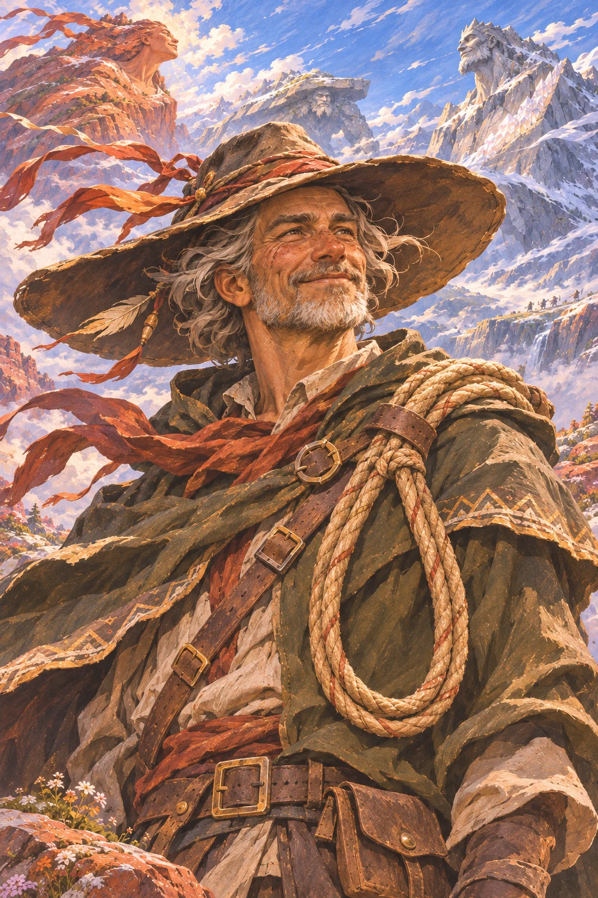
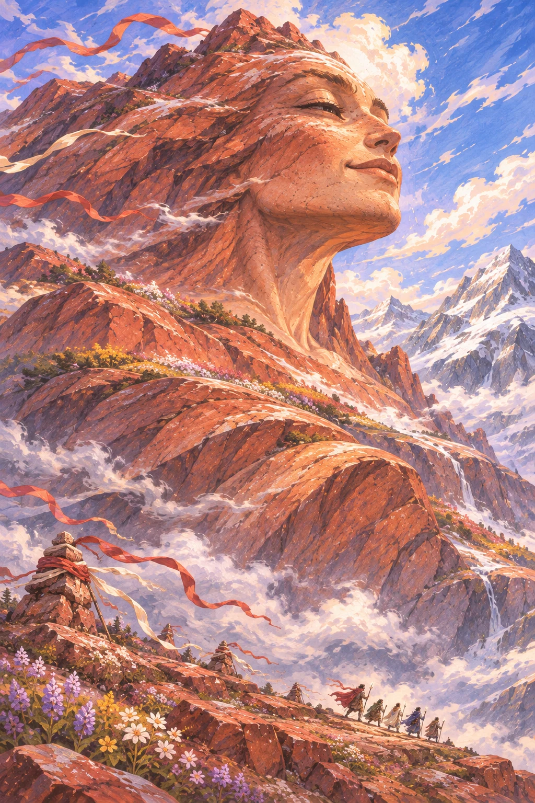

Договориться о знаках с обеими горами и провести стопу Аремы в Сухой зев, не отдав Ломану ни её размаха, ни роста.

Ирдо Две ПетлиСафф Полосатый РукавЭша Рваный Ритм

АремаТорвенЛоман
За ночь горы встали по обе стороны неподвижной скалы, и маленький Дом ходоков оказался между их ногами, как скворечник между двумя колоннами. Стены пахнут смолой и мелом. На крыше ветер рвёт ленты, все в одну сторону. Внизу, в Сухом зеве, блестят вчерашние следы, а над долиной Арема медленно поворачивает лицо к Торвену, и тот отвечает светлеющей кварцевой полосой. Ирдо стоит у двери и складывает верёвку открытой петлёй. «Сегодня, — говорит он, — вы научитесь говорить так, чтобы гора вас поняла». На дорожке шагов карандашом отмечено, где вы остановились вчера.
Подготовка и роли
Ловушка вечера: на стопе Аремы, если в вечер 1 ловушку не обошли; иначе на стопе Торвена (Ломан смотрит с гребня амфитеатра на того, кто начнёт). Постановка Торвена у неподвижной скалы разведана из Дома без дела. Постановка Аремы на дне зева требует разведки. Точка общей доли — крыша Дома. ВЕТКА «ловушка на Торвене» (точный стол): щепки ещё нет, крошка слышит только Арему, поэтому скрытого старта нет — работает лишь ложный жест Аремы: она первой поднимает плечо напоказ, Ломан бросается к ней в пустой воздух, а Торвен ставит стопу. Торвен «точно» только при сработавшем обмане; Арема «точно», если её постановку разведали и показали. Ломан ещё высокий и смотрит на того, кто начал первым (first-turn); если его не заметили в вечер 1, он сам кричит «Кто первый — за тем и шагну!». Результаты: сорвана +1 → украдена +1 и Л +1 → ушиблена +2 → села сама 0 → точно −1; общая доля −1 (при Р 12–17 — две ленты). Остановить стопу можно всегда. Пыльники в throat-dust на шкалу не влияют. Ориентиры: точный стол 14→11, Л 3; средний 16→16 (Арема сорвана), Л 4; неудачный 16→16, Л 4→5. Встреча throat-dust необязательна: уйти от неё можно, потеряв только основную группу следов.
Вечер Яра: срисовывает следы и замечает, что правый след лежит внутри чужой борозды.
Сева: согласует знаки с обеими горами и поднимает общий знак на крыше.
Огняна: разведывает постановку в зеве и держит ленту под съезжающей плитой; при большом столе Тесса выводит ползущих из-под навеса назад.
Сцена 1 · 75 минут
Дом на неподвижной скале
Дом ходоков стоит на неподвижной скале, а по обе стороны медленно дышат две стопы. Ветер на крыше полощет ленты, внизу тень пятки Аремы ползёт к песку Сухого зева. Ирдо складывает верёвку открытой петлёй: «Сигнал должен знать тот, кто шагает. Не вы — гора». И, не глядя: «Лента без гула — что слово в колодец». Он сует Огняне верёвку: «Привязанный не падает. И не бегает». Тень дойдёт до носка, когда ветер перевернёт ленты; дел пять, рук на три. Сафф поднимает ленту к лицу Аремы: «Цвета не различаю. Форму — всегда. Повторю: поднятая — веду. Так?» Гора отвечает гулом позже кивка: «Поднятая… веду… вижу». Потом, пробуя слово: «Сложенная… остановись… это мне… нравится. Ленты… как тогда… когда мы впервые говорили. Тоже был ветер». Торвен с долины, кварц светлеет: «Три ленты… Разлом… вижу. А их — нет. Выше». И суховато: «Сто лет ждал… Ещё вечер… подожду». У выхода из зева, где лежат вчерашние следы, Эша шагает пальцами по камню: «Вот так он шёл: тук-тук, шшш — тук-тук. Видела сама». Помедлив: «Думаю, ему одиноко. Но это я думаю».
Выборы
Согласовать знаки (three-shapes): показать поднятую, горизонтальную и сложенную ленты лицам Аремы и Торвена и дождаться гула-повтора. На склоне: на крыше ветер кладёт горизонтальную ленту, и Торвен путает её со сложенной, пока ленту не поднимут выше конька. Сафф: «Повторю ещё раз. Он повторит. Мы не торопимся».
Разведать постановку Аремы на дне зева. На склоне: осыпь едет под сапогами вместе с ходоком, и внизу он оказывается по колено в песке. Эша у выхода сначала показывает, куда ступить, потом говорит: «Тут твёрдо. Тук. Тут нет. Шшш».
Прочесть следы под навесом (four-depressions, путь А): сравнить четыре низких отпечатка и колено с мелким правым следом у выхода, срисовать на дощечку Яра. На склоне: под навесом только ползком, песок сыплется за ворот; здесь может начаться встреча «Пыльники над следами» (throat-dust). Эша шёпотом: «Не дыши на след».
Приготовить обман (чей — зависит от ловушки, см. проверку). На склоне: обман нужно показать горе, а не только договориться — ходок лезет к лицу горы и машет ей знак «сейчас». Арема, если играть ей: «Притвориться?.. Я не умею… притворяться. Научите». Торвен, если ему: «Махнуть… просто так? Ладно. Махну… первым».
Расспросить Эшу о Ломане (esha-sentence, путь Б). На склоне: сначала она проверяет стол — изображает его походку нарочно нелепо и смотрит, кто засмеётся. Если не засмеялись, показывает всё честно и тихо добавляет: «Хорошо бы у него был свой шаг. Не чужой».
Проверка и путь без броска
Знаки и рассказ Эши броска не требуют; с согласованными знаками возможна общая доля. Спуск в зев: Ловкость (Акробатика) СЛ 12 — быстро, разведка и разговор с Эшей идут одним делом; провал — спуск по верёвке, Эша успевает рассказать только в конце сцены; без броска — по верёвке сразу. Обман зависит от ловушки (dmNote). Ловушка на Ареме: ложный жест Торвена (он первым поднимает плечо напоказ) или скрытый старт через крошку. Ловушка на Торвене: только ложный жест Аремы — щепки ещё нет, а крошка Торвена не слышит. Обман требует согласованных знаков; при Р 18+ крошка не доходит. Встреча «Пыльники над следами» (необязательная): срисовать обе группы следов; бой до четырёх раундов стоит 0. Дольше: тень пятки дошла до носка, а ходоки не успели, и стопа Аремы этого вечера не может быть «точно»: остановить — «сорвана» +1; не остановить без разведки — «ушиблена» +2. Седьмой игрок (при 7 за столом), своё дело: с Саффом на крыше Дома держать вторую ленту общего знака в сцене 2.
Если не получилось
Если пыльники засыпали низкие следы под навесом, у выхода остаются те же следы низкой и высокой походки и трещина колена на камне: путь А доступен без захода под навес. Если Эшу не спросили, она ещё раз показывает походку у выхода и оставляет дощечку (`esha-drawing`), и ведущий читает `h-eshas-drawing`. Если знаки не согласованы, сцену 2 играют без общей доли, а договор можно закончить в вечер 3.
Сцена 2 · 75 минут
Стопа в Сухом зеве
Подъём. Носок Аремы кренится, как палуба; ветер срывает песок с зева. Ходоки у носка, на краю постановки и на крыше Дома, где ленты рвутся в одну сторону. Ирдо с крыши, не ступая на открытую высоту: «Кто шагает — тот и слышит. Глядите на ленту, не вниз». Сафф: «Повторю: поднятая — веду. Жду гула». Арема, медленно: «Несу… Ведите. Сегодня… я вам верю… больше, чем глазам». С гребня амфитеатра орёт Ломан: «Кто первый — за тем и шагну! Ну? Кто? Я жду!» Перенос: стопа висит над зевом, тень переворачивает небо, песок встаёт вихрем. И тут с навеса, сорванная тенью, съезжает плита — прямо на ходока у постановки. Устоять с лентой или отскочить на боковую полку? Если готовили обман, Ломан бросается в пустой воздух у плеча другой горы, правая нога шарит, справа свист: «Эй! Это я не туда? Не туда!» Если нет — его правая нога уже тянется в размах той стопы, которую он караулит. Торвен, сухо: «Спешит… А я — нет». Постановка: ходок на краю поднимает ленту и в последний миг отходит; на крыше поднимается общий знак. Арема: «Сажусь… где лента». Ломан, досадуя: «Ровно! Я говорил, что ровно!»
Выборы
Обман, как готовили: ложный жест другой горы или скрытый старт (если ловушка на Ареме).
Сложенная лента: «стой». Стопа возвращается, она «сорвана»: +1 к расстоянию, Ломан не растёт.
Удержать ленту под съезжающей плитой или отскочить; второй рядом может подхватить ленту.
Занять места: у стопы с ловушкой, у постановки и в точке общего знака на крыше Дома (при Р 12–17 там нужны двое).
Проверка и путь без броска
Подъём: Сила (Атлетика) СЛ 12 на носке; провал — сползти на нижний уступ без вреда и пропустить следующую фазу; без броска — верёвка или пятка, оттуда знак не подать. Плита с навеса: ходок у постановки — Ловкость СЛ 12, устоять и показать место; провал или без броска — отскочить раньше: место не показано, если только второй ходок рядом не подхватил ленту (при 4+ игроках без броска). Неразведанная постановка Аремы: Мудрость (Внимательность) СЛ 13 с носка; без броска — сложить ленту. Результаты, первое подходящее сверху: сорвана +1 → украдена +1 и Л +1 → ушиблена +2 → села сама 0 → точно −1. Ловушка на Ареме: Торвен «точно» (его постановку видно из Дома); Арема — по таблице, ловушку обходит обман. Ловушка на Торвене: Торвен «точно», только если сработал ложный жест Аремы, иначе «сорвана» или «украдена»; Арема «точно», если её постановку разведали и показали. Общая доля −1: обе «точно», знаки согласованы, на крыше подняты две ленты (полоса 12–17). Лучший итог −3, типичный от −2 до 0.
Если не получилось
Если стопа села на край навеса, камень трескается и Арема стонет через камень: «ушиблена», +2, но трещина показывает, где в навесе лежали низкие следы, и их можно подобрать с земли. Ходок, сбитый плитой, съезжает на боковую полку невредимым и видит оттуда правый след Ломана на выходе. Сбитый знак на крыше повторяет Сафф или Ирдо.
Три формы ленты
На стене Дома ходоков висят три ленты — поднятая, горизонтальная и сложенная — рядом с тремя рисунками ладоней.
Что можно установить
Форма ленты различает «веду», «жди» и «остановись» без цвета. Общий знак — лента, поднятая там, где её видят обе горы. Знак работает, только если гора сама повторила его гулом: гора слушает, но решает сама.
Получение
С Саффом и Ирдо показать каждую форму лицам Аремы и Торвена по очереди и дождаться гула-повтора от каждой. Сафф повторяет значения вслух, пока их не повторит гора. Бросок не нужен.
Запасной путь
Если лент нет или они далеко, те же три значения передаются рукой и голосом с близкой полки; Ирдо показывает, как держать руку, чтобы гора увидела.
Низкие вмятины
Под низким навесом Сухого зева на песке четыре плоских глубоких отпечатка, рядом длинная царапина, будто волокли плиту, и след колена с трещиной, набитой красной и серебряной крошкой. У выхода в борозде осыпи виден мелкий след.
Что можно установить
Здесь Ломан шёл низко, на четырёх опорах, с плитой поперёк плеч: правого высокого следа под навесом нет. Правая нога у выхода стоит мелко, внутри борозды осыпи, левая глубоко. Колено с двухцветной крошкой в трещине — шов его собственного и краденого камня.
Получение
Пройти по дну зева под навес, сравнить четыре отпечатка и колено с мелким правым следом у выхода; срисовать на дощечку Яра (правый след ложится внутрь чужой борозды). Бросок не нужен.
Запасной путь
Если навес засыпан, у выхода остаются те же следы низкой и высокой походки и трещина колена на камне, где он вставал: их видно, не заходя под навес.
Что видела Эша
Эша держит дощечку с длинной горизонтальной фигурой на четырёх палочках и стрелкой, уходящей в осыпь.
Что можно установить
Эша ночью видела, как Ломан низко прошёл под навесом и долго стоял на четырёх опорах у выхода. Потом по стене поехала осыпь, он сунул в неё правую ногу и встал: без осыпи не встал. В правом колене у него свистело, слева нет. О высоте он сказал: «Могу и так. Но красиво я выгляжу только наверху». Что ему одиноко, она не видела, а думает.
Получение
Попросить Эшу рассказать о Ломане: она сразу показывает его походку телом — тук-тук, шшш — а потом рассказывает, что видела сама. Бросок не нужен.
Запасной путь
Если её не спросили в вечер 2, в вечер 3 Эша сама приходит на Серебряное ребро; если и там пропустили, она оставляет подписанный рисунок у выхода из зева, и ведущий выдаёт раздатку.
Взгляд перед выпадом
В Коленном амфитеатре, пока поднимается пятка, глаза-камешки исполина поворачиваются раньше его плеч и задерживаются на том, кто двигается первым.
Что можно установить
Ломан вклинивается в того, кто первым начал большое движение. Ложный первый жест другой горы или скрытый старт, которого он не видит, уводят его мимо. Пока он высокий и смотрит, это работает.
Получение
Во время подъёма пятки (дело «Смотреть на третью фигуру») следить за амфитеатром и назвать, на кого повернулась его голова. Бросок не нужен.
Запасной путь
Если в вечер 1 за ним не следили, в вечер 2 Ломан сам кричит с гребня амфитеатра: «Кто первый — за тем и шагну!» — и намерение становится ясным всем.
Изменения после решений
Если Знаки согласованы с обеими горами → Общая доля доступна во всех следующих вечерах. Если нет, их можно согласовать делом в вечер 3.
Если В этот вечер сработал ложный жест Аремы → В вечер 3 Ломан на её плечо больше не поведётся: на ребре работает только скрытый старт через щепку при ослеплённых глазах.
Если Эшу расспросили или нашли её рисунок → Путь Б открыт. Если нет, в вечер 3 Эша сама приходит на Серебряное ребро.
Если При любом исходе → В вечер 3 Ломан ставит на Серебряное ребро свои глаза (rib-watchers): после вечера 2 он не доверяет взгляду издалека.
Выдать в нужный момент
Три формы ленты — Вечер 2: когда обе горы повторили все три знака гулом.
Свидетельство Эши — Вечер 2 или 3: после рассказа Эши или когда ходоки находят её подписанный рисунок у выхода из зева.
Завершение вечера
Стопа Аремы стоит в Сухом зеве, и песок оседает вокруг неё медленно, как дыхание. Ломан хохочет над зевом: «Две ленты, три ленты. А ноги у меня всё равно длиннее!» Ветер уносит его голос вдоль склона. Эша, если её спросили, отдаёт дощечку с рисунком, а ведущий читает `h-eshas-drawing`. Между двумя вершинами теперь меньше пролётов, чем утром; ведущий называет полосу, в которую вошла отметка.